قدم الخير — خيارات الشعار
الفكرة في كل الخيارات: نقطة «الخير» قلب. وكل خيار يضيف إشارة خير واحدة.
أ — القلب يشعّ
نور الخير ينتشر من القلب
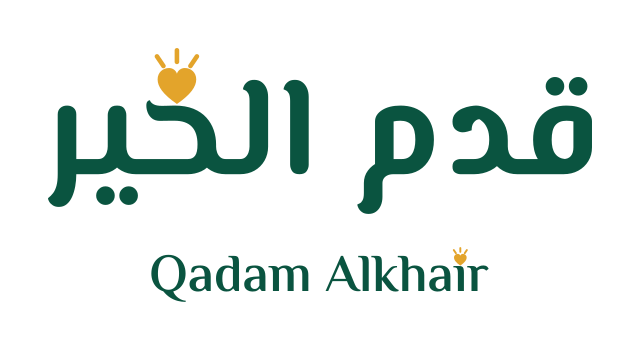
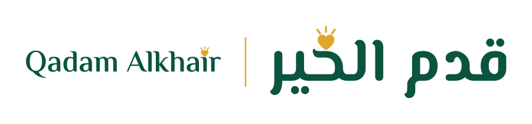
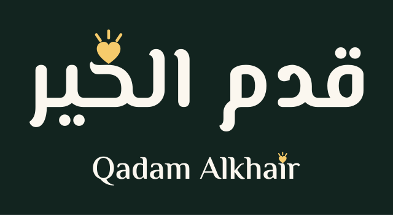
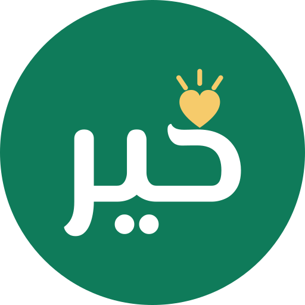
options/a-light/ب — سنبلة وقلب
لام «الخير» سنبلة: رزق وبركة · والقلب عطاء
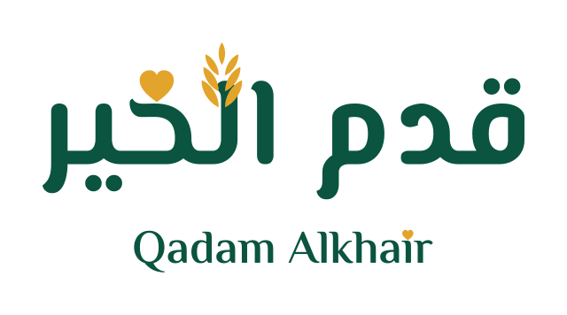
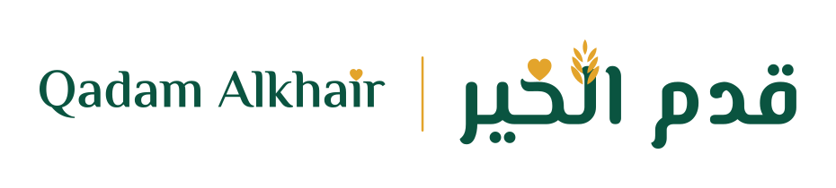
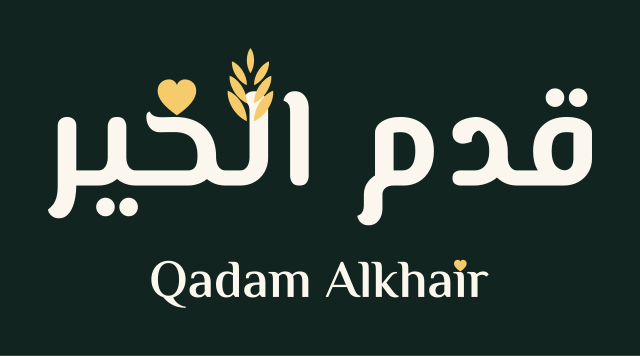
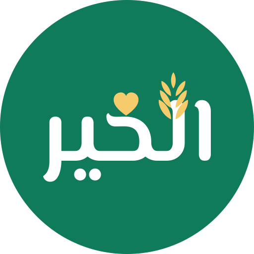
options/b-wheat/ج — حضن تحت الاسم
ضربة ذهبية تحمل الاسم: يد تحمل الخير
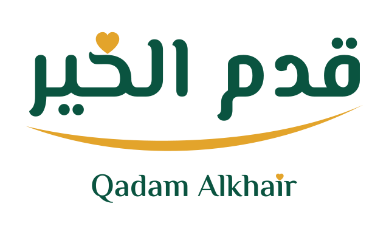
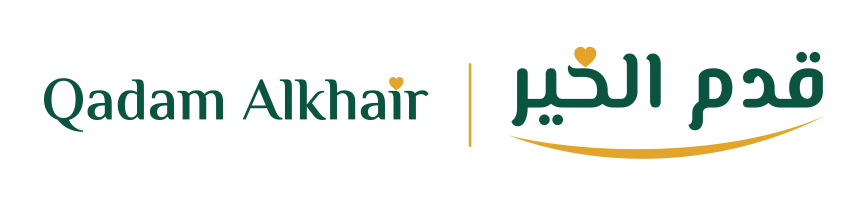
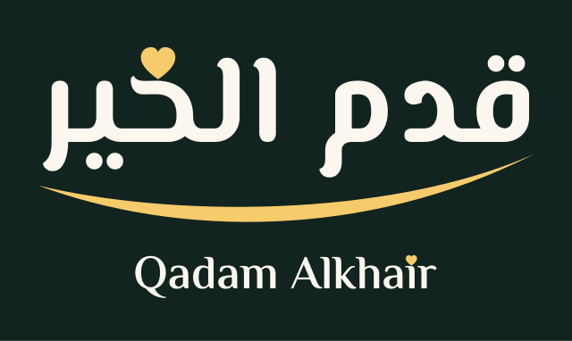
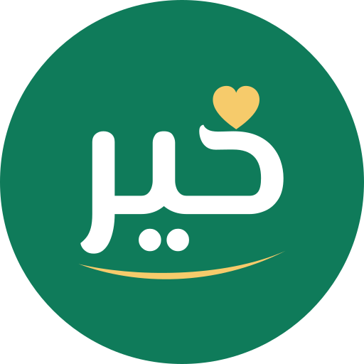
options/c-cradle/د — مدّ وإشعاع
«الخيـر» فاتحة يديها، والقلب يشعّ
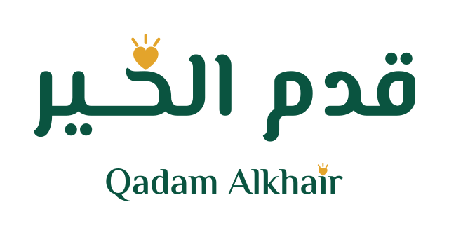
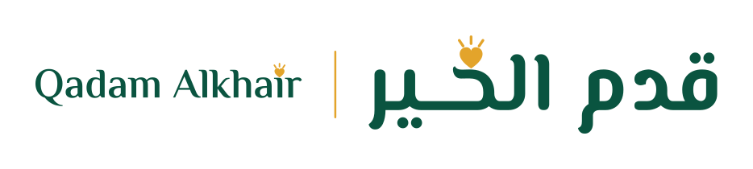
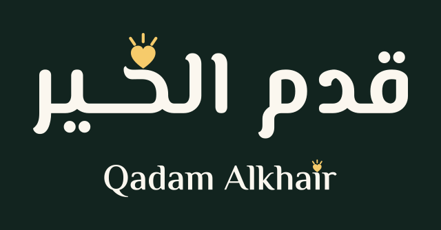
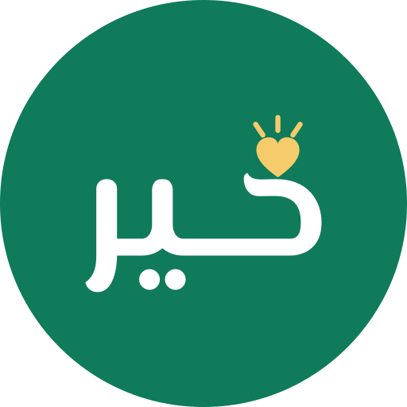
options/d-kashida/الأساس
القلب وحده مكان النقطة
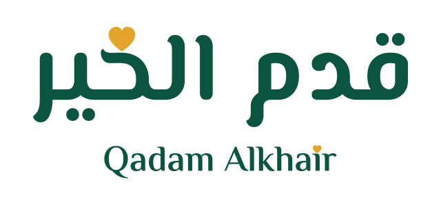
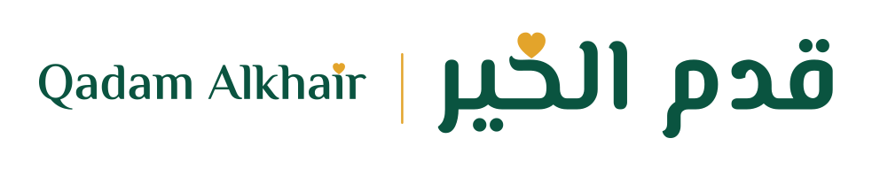
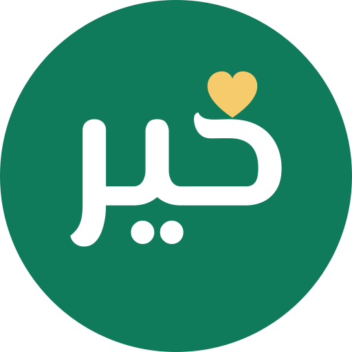
options/0-base/